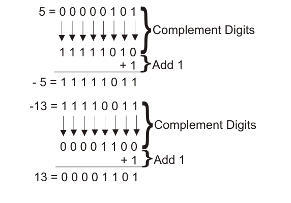
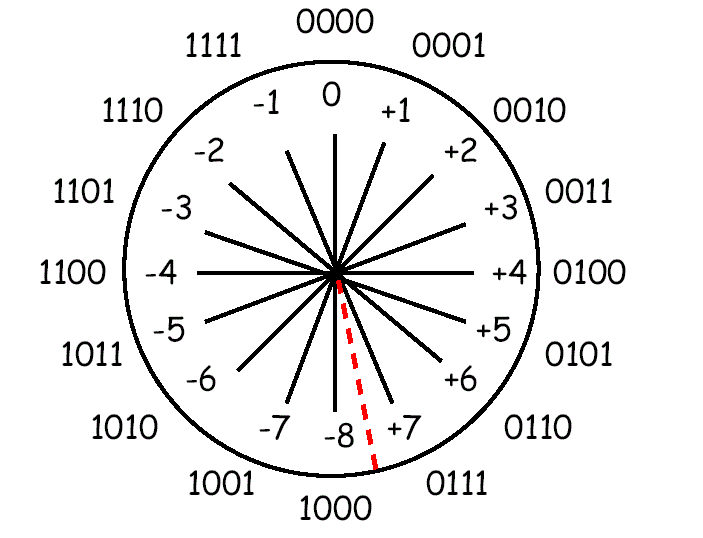

Il complemento a due è un metodo molto utile per rappresentare i numeri con segno in informatica.
Questo metodo utilizza il bit più significativo (MSB) per indicare il segno del numero: se il MSB è 0, il numero è positivo o nullo; se il MSB è 1, il numero è negativo.

Inoltre, il complemento a due permette di eseguire le operazioni aritmetiche direttamente utilizzando gli algoritmi dei numeri naturali.
Per calcolare il complemento a due di un numero binario, si inverte ogni bit (cioè si cambiano gli 0 in 1 e viceversa) e poi si aggiunge 1 al risultato.

Ad esempio, per calcolare il complemento a due di 0010 (che rappresenta il numero 2 in binario), si inverte ogni bit per ottenere 1101,
e poi si aggiunge 1 per ottenere 1110, che rappresenta il numero -2 in complemento a due.

In sintesi, il complemento a due è un metodo molto utile per rappresentare i numeri con segno in informatica
e permette di eseguire le operazioni aritmetiche direttamente utilizzando gli algoritmi dei numeri naturali.
Inserisci un numero e te ne calcolerò il complemento a 2:
Risultato:
Video esplicativo: